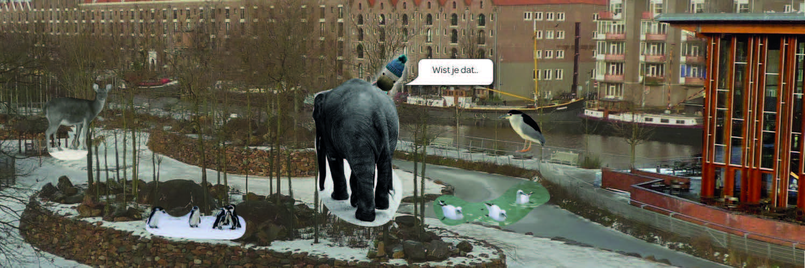

Het Artis aquarium wordt verbouwd en aan ons was het de opdracht om een interactieve verbetering eraan toe te voegen.
Wij als groepje moesten ons vestigen op het onderwerp Historie. Wij hebben verschillende soorten onderzoeksmethodes uitgevoerd, zoals enquetes, interviews, observaties en online onderzoek. Uit deze methodes zijn wij op een design challenge gekomen:
“Hoe kunnen we binnen de Artis-brand een interactief product ontwerpen dat de historie van het aquariumgebouw, het park en de stad op een voor de bezoeker aantrekkelijke manier presenteert?"
Wij hebben ons gevestigd op de doelgroep Terugkerende Gezinnen. Gezinnen vormen al een grote bezoekersgroep, maar terugkerende bezoekers met een abonnement gaan extra vaak en voelen zich verbonden met Artis. Ze zijn hierdoor vaak meer geïnteresseerd in de geschiedenis van het aquarium dan de gemiddelde bezoeker.
Ons concept is een historisch interactief panorama waarop beelden uit de geschiedenis van het aquarium, Artis en de omgeving worden getoond. Het panorama wordt op drie muren geprojecteerd. Dit zorgt ervoor dat er een grote immersive experience wordt gecreëerd.
Het systeemmodel wordt geeft weer hoe de verschillende componenten van het concept technologisch in verhouding staan tot elkaar en hoe ze elkaar beïnvloeden. De bezoeker maakt gebruik van de content op de tablets en kijkt naar het panorama op de muur, zo heeft hij interactie met het concept.
Het belangrijkste deel van onze ervaring is het digitale panorama. Dit panorama wordt op grote schaal geprojecteerd op drie muren in de expositieruimte. Gecombineerd met het gebruik van licht en geluid wordt een enorm overtuigende en imposante ervaring gecreëerd.
Het was erg gaaf om in een groepje voor een echt bedrijf te werken. De opdracht vergde best wel veel eigen inzet en onderzoek en ik heb zeker geleerd om zelf meer op mensen af te stappen. Het eindproduct was zeker geslaagd in het vervullen van de behoeftes van de gebruikers.